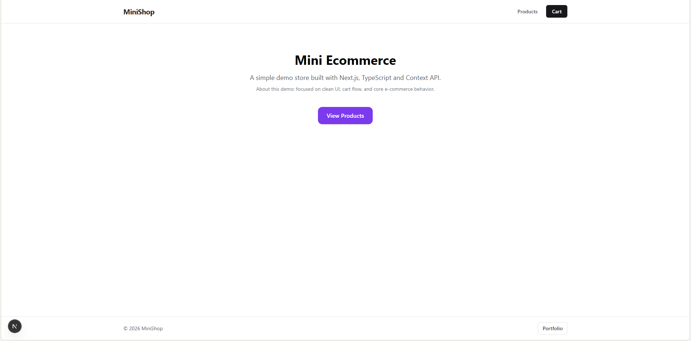
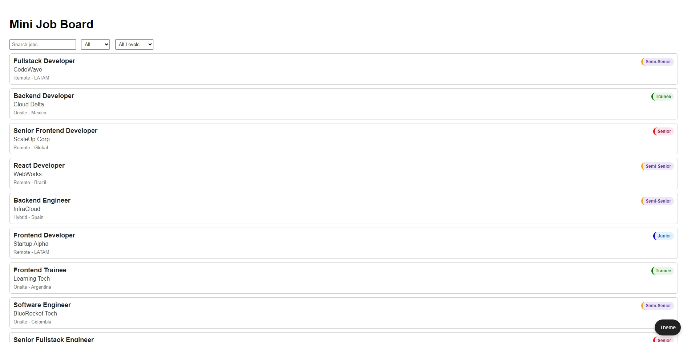

IA Story Generator preview
AI Story Generator
Problem: Generate coherent short stories from minimal user input without breaking when API credits run out.
Stack: Node.js, Vercel Serverless Functions, Replicate API, Vanilla JavaScript.
Outcome: Built a resilient generation flow with explicit 402 handling and clear fallback messaging.
NodeServerlessAPI Resilience

Fake E-commerce
Problem: Build a realistic storefront flow with browsing, cart updates, and checkout states.
Stack: Next.js App Router, React, TypeScript, Context API, Tailwind CSS.
Outcome: Delivered a complete fake checkout journey with reliable cart behavior and success/error pages.
Next.jsReactTypeScript

Mini Job Board
Problem: Help users find relevant jobs quickly from a JSON dataset with multiple filters.
Stack: HTML, CSS, Vanilla JavaScript, JSON data source.
Outcome: Shipped client-side search/filter logic with empty-state handling and persisted dark mode.
JavaScriptUI FilteringDark Mode